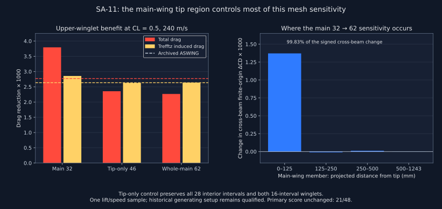

Primary SA-11 comparison · Same-main-wing control
Follow-up: full-field accounting separates circulation changes from receiver quadrature. The large separated receiver terms mostly cancel in the full wake field.
Nine saved-state audits locate about 90% of the total mesh-dependent drag change in finite-origin wake interactions between the main wing and winglets. Almost all of that signed contribution involves the outer 125 mm of projected main-wing span. All vortex terms remain included.
A follow-up changes only the outer two original main-wing intervals per side, producing 46 main intervals. It retains all 28 interior intervals, both complete 16-interval winglets, the same minimum spacing and aerodynamic equations. All six new solves are valid. This local change reproduces 94.18% of the total-drag change from refining the whole main wing to 62 intervals.
| Quantity | ASWING | Main 32 | Tip-only 46 | Whole-main 62 |
|---|---|---|---|---|
| Total ΔCD | -0.00276893 | -0.00379425 | -0.00235359 | -0.00226453 |
| Trefftz ΔCDi | -0.00263341 | -0.00285607 | -0.00262525 | -0.00263642 |
| Total benefit error | — | 37.03% too strong | 15.00% too weak | 18.22% too weak |
The local trial matches the Trefftz benefit within 0.31% and the lift increment at 3° within 1.77%. Total drag benefit remains 15.00% low. The native generating input is not recovered, so these increments retain that qualification.
Primary score remains 21/48. This is a diagnostic of spacing sensitivity, not a solver correction, convergence proof or selected replacement mesh. The minimum-spacing rule prevents dangerously close horseshoes but does not by itself establish accurate integrated drag.

Download plot · Verified interaction accounting · Verified local-mesh results · Diagnostic upper-winglet mesh
Observed 2026-11-08T20:59:36.637431+00:00. Independent velocity/force checks and Decimal reductions; one BLAS thread and bounded serial jobs. No browser or background tests.